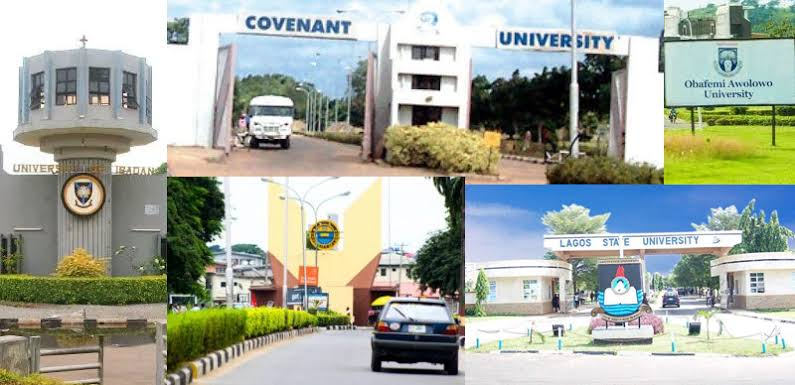
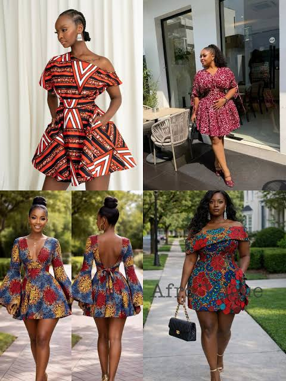
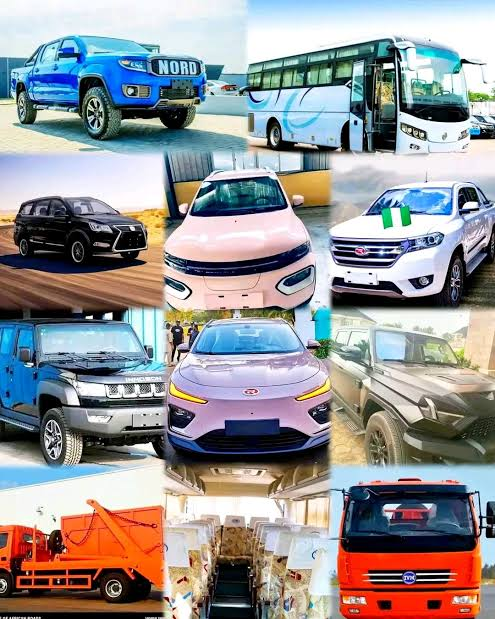
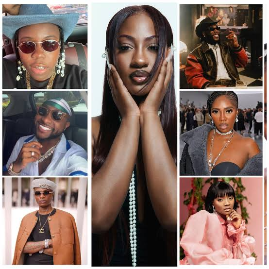

Joint Admissions and Matriculation Board has released results for some underage candidates who sat for the 2026 UTME, while clarifying the conditions surrounding admission for candidates who meet the required age and other admission requirements.
For the 2026 admission cycle, the approved minimum scores are currently:
Universities: 150
Colleges of Nursing: 150
Polytechnics: 100
Colleges of Education: 100
Innovation Enterprise Institutions: 100
The minimum admission age remains 16 years.
The Federal Government says it has brought more than one million out-of-school children into formal education over roughly 20 months. The development is part of efforts to tackle Nigeria’s long-running out-of-school-child crisis.
Today, September 8, 2026, Education Minister Tunji Alausa warned that neglect of boy-child education could become a major problem if urgent action is not taken.
The government says its interventions have already helped millions of girls return to school, but attention now needs to be given to boys who are increasingly at risk of educational exclusion.
The Trumpet.
The Federal Government has introduced a National Textbook Ranking System covering primary, junior secondary and senior secondary education.
The objective is to ensure that textbooks used in Nigerian schools are curriculum-compliant, relevant and of acceptable quality, while reducing the use of substandard or unsuitable materials.
The Federal Government and Academic Staff Union of Universities have been working through a new agreement intended to address long-running problems involving university funding, staff welfare, academic standards and industrial disputes. The agreement was described as an attempt to bring greater stability to Nigeria’s university system.
The Federal Government announced a seven-year moratorium on establishing new federal universities, polytechnics and colleges of education.
The rationale is to concentrate available resources on improving existing institutions rather than continually creating new ones with inadequate infrastructure, staffing and student populations.
Another significant policy development is the Federal Government’s decision to exempt candidates seeking admission into education programmes and certain non-engineering agriculture programmes from UTME, as part of efforts to encourage more Nigerians to enter these strategically important fields.
The Dangote Group and Aliko Dangote Foundation announced a ₦1 trillion scholarship initiative, designed to support more than 1.3 million students across Nigeria’s 774 local government areas, with implementation beginning in 2026.
Nigeria is continuing to implement revised curricula aimed at making basic, secondary and technical education more relevant to skills development, technology and employment.
However, curriculum changes have generated debate, particularly around how quickly schools and teachers can adapt and whether students have been adequately prepared for changes affecting examinations such as WASSCE.

One of the biggest current stories is the return of Africa Fashion Week Nigeria (AFWN) for its 12th edition this December in Lagos. Organisers are positioning the event around African creativity and the future of the continent’s fashion industry. The 2026 African Fashion Week London recently concluded, with Nigerian designers participating in programmes focused on sustainability, AI, design innovation, international collaboration and creative entrepreneurship. The event highlighted the increasing global influence of African—including Nigerian—fashion. Preparations are underway for Nigeria Fashion Week 2026, which is expected to feature six major runway showcases involving Nigerian and international designers. The organisers are aiming to position Nigeria more prominently in the global fashion industry. The 2026 Lagos Leather Fair focused on the future of African leather, including AI, export opportunities, craftsmanship and innovation. This reflects a growing push to transform Nigeria’s leather sector from primarily local production into a globally competitive fashion and luxury industry. One of the interesting developments is the growing use of AI and digital technology in fashion design, marketing and production. Nigerian and African fashion platforms are increasingly discussing how technology can help designers reach international customers and improve their businesses. Sustainable fashion is gaining attention, particularly through discussions around local craftsmanship, environmentally responsible materials, textile waste and regenerative fashion. This is gradually changing the conversation from simply “looking good” to how Nigerian fashion is produced and its environmental impact. Lagos fashion and entertainment platform Bare Fashion Evening has announced “Threads of Energy”, scheduled for November 2026. The event is expected to combine fashion, music and entertainment in a more immersive experience. Designers such as Lisa Folawiyo, Maki Oh and other Nigerian creative houses continue to receive international attention. The broader trend in 2026 is a shift from Nigerian fashion seeking validation abroad to Nigerian designers increasingly creating their own global platforms and commercial opportunities.
The 2022 FIFA World Cup final is widely regarded as one of the greatest football matches ever played. Argentina faced defending champions France in a thrilling encounter that eventually ended 3–3 after extra time, with Argentina winning 4–2 on penalties. Argentina started the match strongly. Lionel Messi opened the scoring from the penalty spot in the 23rd minute before Ángel Di María doubled Argentina’s advantage in the 36th minute. France struggled to create clear opportunities during the first half, and Argentina appeared to be in complete control. FIFA However, the match changed dramatically in the second half. Kylian Mbappé scored a penalty in the 80th minute and then equalised just a minute later with a spectacular volley. Suddenly, France were back in the game, and the match went into extra time. In extra time, Messi scored again in the 108th minute, putting Argentina ahead 3–2. France refused to surrender, however. In the 118th minute, Mbappé converted another penalty to complete a hat-trick, making him only the second player to score three goals in a men’s World Cup final. With the score still 3–3 after extra time, the World Cup was decided by a penalty shootout. Argentina held their nerve and won 4–2, with goalkeeper Emiliano Martínez playing a crucial role. Argentina therefore claimed their third World Cup title, their first since 1986. For Messi, the victory was especially significant. After years of trying to win football’s biggest prize with Argentina, he finally lifted the World Cup trophy. His performance throughout the tournament and particularly in the final became one of the defining moments of his career. The final also established Mbappé as one of the game’s biggest stars. Despite scoring a hat-trick, including two penalties and a goal from open play, he finished on the losing side. He nevertheless won the Golden Boot after scoring eight goals at Qatar 2022. Final result: Argentina 3–3 France Argentina won 4–2 on penalties The match remains memorable because it combined brilliant attacking football, dramatic comebacks, individual excellence and an emotional ending for Messi and Argentina. It was not simply a World Cup final—it was a historic football spectacle.

Nigeria’s Automobile Market is changing quickly in 2026. New SUVs, Chinese brands, electric vehicles (EVs), hybrids and newer Toyota models are becoming increasingly visible, while buyers are paying more attention to fuel economy and technology. 2026 Toyota RAV4 arrives in Nigeria One of the biggest recent launches is the 2026 Toyota RAV4. Toyota-by-CFAO introduced it into Nigeria alongside its global rollout, making Nigeria one of the first African markets to receive the new generation. It comes in Active, Comfort and Limited variants, with a 2.0-litre petrol engine producing 172 hp. Features include Apple CarPlay, Android Auto, LED lighting, dual-zone air conditioning and a rear-view camera. Electric cars are gaining ground Electric vehicles are becoming more common in Nigeria. According to a recent Reuters report, almost 4,000 EVs had been approved in Nigeria during the first half of 2026 as the government promotes EV adoption through tax incentives and local-assembly policies. Chinese EV manufacturer BYD is increasingly appearing in Nigeria’s new-car market. Current Nigerian listings include the 2026 BYD Tang EV, while the BYD Song Plus is also available through local dealers. This is significant because BYD is one of the world’s major electric and electrified-vehicle manufacturers. Chinese manufacturers are becoming much more prominent in Nigeria. Current 2026 listings include: Changan X5 Plus Geely Galaxy L6 Jetour Dashing Dongfeng Nammi 01 Forthing Friday EV Chery Tiggo 9 Pro For example, Autochek currently lists the 2026 Chery Tiggo 9 Pro at around ₦71 million, although actual dealer prices can vary. Autochek Toyota remains one of the strongest choices Toyota continues to dominate Nigerian consumer interest because of its reputation for reliability, availability of spare parts and familiarity among Nigerian mechanics. Some newer Toyota models currently appearing in Nigeria include: Luxury SUVs remain popular Nigeria’s premium market continues to see expensive SUVs such as the 2026 Toyota Land Cruiser Prado, Lexus GX, Range Rover Sport, Mercedes-Benz GLE and BMW 550i. Current Nigerian listings show some very wide price differences—for example, a 2026 Prado listing around ₦105 million and a Lexus GX listing around ₦170 million. Fuel economy is becoming increasingly important The cost of petrol has changed the way many Nigerians think about vehicles. Fuel-efficient cars, hybrids and EVs are attracting more attention because owners are looking for ways to reduce running costs. But EV adoption has a major obstacle: Nigeria’s electricity infrastructure. Reuters reports that the national grid supplies roughly 4,000 MW for a population of more than 200 million, while public EV charging infrastructure remains limited. Traditional Japanese dominance → Japanese + European + rapidly growing Chinese competition. At the same time, SUVs remain extremely popular because they are better suited to Nigeria’s varying road conditions and offer more space. In short: 2026 is shaping up to be an important year for Nigeria’s automobile market, particularly because new-generation Toyota models, Chinese vehicles and EVs are becoming more accessible. Current Nigerian marketplaces already show dozens of brand-new 2026 vehicles available.

Burna Boy has reportedly become the first Nigerian artist to surpass 4 billion YouTube views, counting videos and other content on his official channel. It is another major indicator of the global reach of Nigerian music. Afrobeats is increasingly operating as a global music industry rather than simply a Nigerian genre. International collaborations, overseas concerts and recognition at major global award platforms continue to expand opportunities for Nigerian artists. The Nigerian scene is not being driven only by the established “Big 3.” Newer and independent artists continue to release projects and experiment with Afrobeats, Afro-fusion, Afro-house and other sounds. For example, Pulse Nigeria recently highlighted rising artist Aceix, while Princess Wonda released her EP There is increasing attention on music monetisation, streaming revenue and artist economics. Nigerian musicologists and industry stakeholders have been calling for reforms that would help musicians earn more sustainably from the growing value of the Nigerian music market. Davido is talking about the changing Afrobeats industry Davido recently argued that Afrobeats is more lucrative than before, but artists are no longer as united as they once were. That has renewed conversations about competition, collaboration and unity among Nigerian musicians. While Afrobeats dominates international headlines, traditional Nigerian genres are still evolving. There is renewed discussion about the future of Fuji and Jùjú music, including whether younger audiences will continue to sustain these genres. The industry is preparing for another busy entertainment season. September is already seeing increased activity around concerts, releases, sponsorships and event planning, ahead of Nigeria’s traditionally huge end-of-year entertainment period. Industry players are already negotiating venues, sponsorships and artist appearances. The big picture: Nigerian music in September 2026 is being defined by global expansion, streaming milestones, award-season competition, new artists, international events and debates about how musicians can earn more from the industry’s growth.